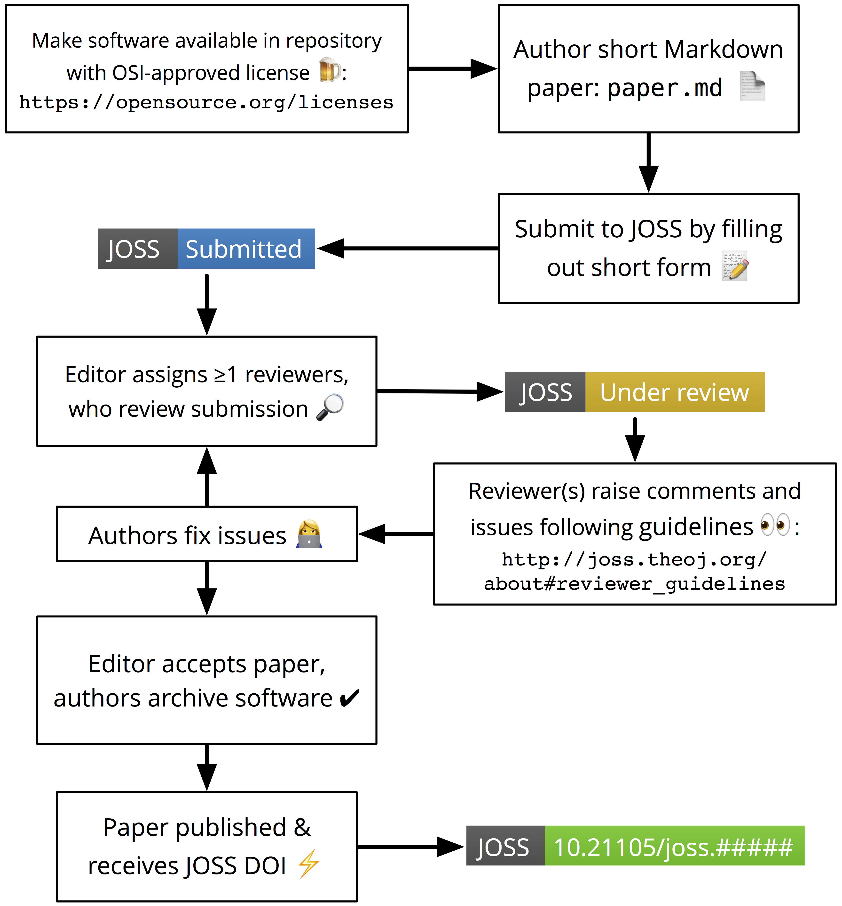

Editorial Guide¶
The Journal of Open Source Software (JOSS) conducts all peer review and editorial processes in the open, on the GitHub issue tracker.
JOSS editors manage the review workflow with the help of our bot, @whedon. The bot is summoned with commands typed directly on the GitHub review issues. For a list of commands, type: @whedon commands.
Note
To learn more about @whedon’s functionalities, take a look at our dedicated guide.
Pre-review¶
Once a submission comes in, it will be in the queue for a quick check by the Editor-in-chief (EiC). From there, it moves to a PRE-REVIEW issue, where the EiC will assign a handling editor, and the author can suggest reviewers. Initial direction to the authors for improving the paper can already happen here, especially if the paper lacks some requested sections.
Important
If the paper is out-of-scope for JOSS, editors assess this and notify the author in the PRE-REVIEW issue.
The EiC assigns an editor (or a volunteering editor self-assigns) with the command @whedon assign @username as editor in a comment.
Note
If a paper is submitted without a recommended editor, it will show up in the weekly digest email under the category ‘Papers currently without an editor.’ Please review this weekly email and volunteer to edit papers that look to be in your domain. If you choose to be an editor in the issue thread type the command @whedon assign @yourhandle as editor
Finding reviewers¶
At this point, the handling editor’s job is to identify reviewer(s). We like to have two reviewers per submission. If the editor is comfortable with their own assessment of the submission, one reviewer may be sufficient. If the editor feels particularly unsure of the submission, maybe a third reviewer can be recruited.
To recruit reviewers, the handling editor can ping candidates on Twitter, or mention them in the PRE-REVIEW issue with their GitHub handle. After expressing initial interest, candidate reviewers may need a longer explanation via email. See sample reviewer invitation email, below.
Once a reviewer accepts, the handling editor runs the command @whedon assign @username as reviewer in the PRE-REVIEW issue. Add more reviewers with the command @whedon add @username as reviewer.
Note
The assign command clobbers all reviewer assignments. If you want to add an additional reviewer use the add command.
Starting the review¶
Next, run the command @whedon start review magic-word=bananas. If you forget the magic word, @whedon will remind you. This will open the REVIEW issue, with prepared review checklists for each reviewer, and instructions. The editor should close the PRE-REVIEW issue, at this point, and move the conversation to the separate REVIEW issue.
Review¶
The REVIEW issue contains some instructions, and reviewer checklists. The reviewer(s) should check off items of the checklist one-by-one, until done. In the meantime, reviewers can engage the authors freely in a conversation aimed at improving the paper.
If a reviewer recants their commitment or is unresponsive, editors can remove them with the command @whedon remove @username as reviewer. You can also add new reviewers in the REVIEW issue, but in this case, you need to manually add a review checklist for them by editing the issue body.
Comments in the REVIEW issue should be kept brief, as much as possible, with more lengthy suggestions or requests posted as separate issues, directly in the submission repository. A link-back to those issues in the REVIEW is helpful.
When the reviewers are satisfied with the improvements, we ask that they confirm their recommendation to accept the submission.
After acceptance¶
When a submission is accepted, we ask that the authors create an archive (on Zenodo, figshare, or other) and post the archive DOI in the REVIEW issue. The editor should add the accepted label on the issue, run the command@whedon set <archive doi> as archive, and ping the EiC for final processing.
Sample letter to invite reviewers¶
Dear Dr. Jekyll,
I found you following links from the page of The Super Project and/or on Twitter. This
message is to ask if you can help us out with a submission to JOSE (The Journal of Open
Source Software), where I’m editor.
JOSS publishes articles about open source research software. The submission I'd like you
to review is titled: "great software name here"
and the submission repository is at: https://github.com/< … >
JOSS is a free, open-source, community driven and developer-friendly online journal
(no publisher seeking to make revenue from the volunteer labor of researchers!).
The review process at JOSS is unique: it is open and author-reviewer-editor conversations
are encouraged.
JOSS reviews involve downloading and installing the software, and inspecting the repository
for key elements. See http://joss.theoj.org/about#reviewer_guidelines
Editors and reviewers post comments on the REVIEW issue, and authors respond to the comments
and improve their submission until acceptance (or withdrawal, if they feel unable to
satisfy the review).
Would you be able to review the great submission for JOSS? Or, if not, could you recommend
someone from your team to help out?
Kind regards,
JOSS Editor.
Overview of editorial process¶
Step 1: An author submits a paper.
The author can choose to select an preferred editor based on the information available in our biographies. This can be changed later.
Step 2: If you are selected as an editor you get @-mentioned in the pre-review issue.
This doesn’t mean that you’re the editor, just that you’ve been suggested by the author.
Step 3: Once you are the editor, find the link to the code repository in the pre-review issue
Step 4: The editor looks at the software submitted and checks to see if:
- There’s a general description of the software
- The software is within scope as research software
- It has an OSI approved license
Step 5: The editor responds to the author saying that things look in line (or not) and will search for reviewer
Step 6: The editor finds >= 1 reviewers
- Use the list of reviewers: type the command
@whedon list reviewersor look at list of reviewers in a Google spreadsheet - If people are in the review list, the editor can @-mention them on the issue to see if they will review: e.g.
@person1 @person2 can you review this submission for JOSS? - Or solicit reviewers outside the list. Send an email to people describing what JOSS is and asking if they would be interested in reviewing.
Step 7: Editor tells Whedon to assign the reviewer to the paper
- Use
@whedon assign @reviewer as reviewer - To add a second reviewer use
@whedon add @reviwer2 as reviewer
Note
The assign command clobbers all reviewer assignments. If you want to add an additional reviewer use the add command.
Step 8: Create the actual review issue
- Use
@whedon start review magic-word=bananas - An issue is created with the review checklist, one per reviewer, e.g. https://github.com/openjournals/joss-reviews/issues/717
Step 9: Close the pre-review issue
Step 10: The actual JOSS review
- The reviewer reviews the paper and has a conversation with the author. The editor lurks on this conversation and comes in if needed for questions (or CoC issues).
- The reviewer potentially asks for changes and the author makes changes. Everyone agrees it’s ready.
Step 11: The editor pings the EiC to get the paper published
- To get the paper published (mention EiC
@arfonin the issue)
Step 12: Celebrate publication! Tweet! Thank reviewers! Say thank you on issue.
Visualization of editorial flow¶
